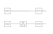

Re:search (12/?)
PhD - I year (part 5)
I've found an answer to the previous question with a three step procedure:-
1) RMSTE definition
I've defined a scalar metric, which I've called RMSTE (Root Mean Square Tracking Error), in order to quantify the distance between two tracks. -
2) RMSTE probability density
Due to the measurement noise, the RMSTE is a random variable. Hence, I've searched (and I found!) the theoretical distribution behind the static RMSTE, i.e. the PDF (Prodability Density Function) of the RMSTE between the track generated by the static scheme and the real track. -
3) RMSTE criteria
Given the PDF of the static RMSTE, one can compute any of its statistic, e.g. the expectation. In this term, I've stipulated thatA Kalman filter is well designed iff \(\underbrace{\mathbb{E}\left[\textsf{dynamic RMSTE}\right]}_{\approx \textsf{w/ Monte Carlo}}\ll \underbrace{\mathbb{E}\left[\textsf{static RMSTE}\right]}_{=\sqrt{2}\, \sigma_v}\)
where:- \(\textsf{dynamic RMSTE}\) is the RMSTE between the track generated by the dynamic scheme and the real track;
- \(\mathbb{E}\left[\textsf{dynamic RMSTE}\right]\) is the expectation of the dynamic RMSTE. Since its PDF is not available, it must be computed in a Monte Carlo sense;
- \(\sigma_v\) is the standard deviation of the measurement noise.
static vs dynamic tracking

Essentially, the static scheme is a subset of the dynamic scheme where the Kalman filter is bypassed. If the static scheme performs better
than the dynamic scheme then one can say that the Kalman filter is wasting, rather than enhancing, the information contained in the measurements
generated by the sensor. Of course this is a bad situation that the tracker designer must avoid at all cost.